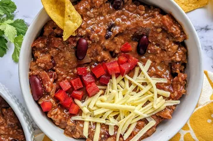

Easy Homemade Chili

Description
Homemade chili is delicious and goes great with
cornbread or over corn chips for a chili pie! I like
to use spicy pinto beans.
Ingredients
- 1 pound ground beef
- 1 onion, chopped
- 1 (15 ounce) can tomato sauce
- 1 (15 ounce) can kidney beans
- 1 (14.5 ounce) can stewed tomatoes
- 1 1/2 cups water
- 1 pinch chili powder
- 1 pinch garlic powder
- salt and pepper to taste